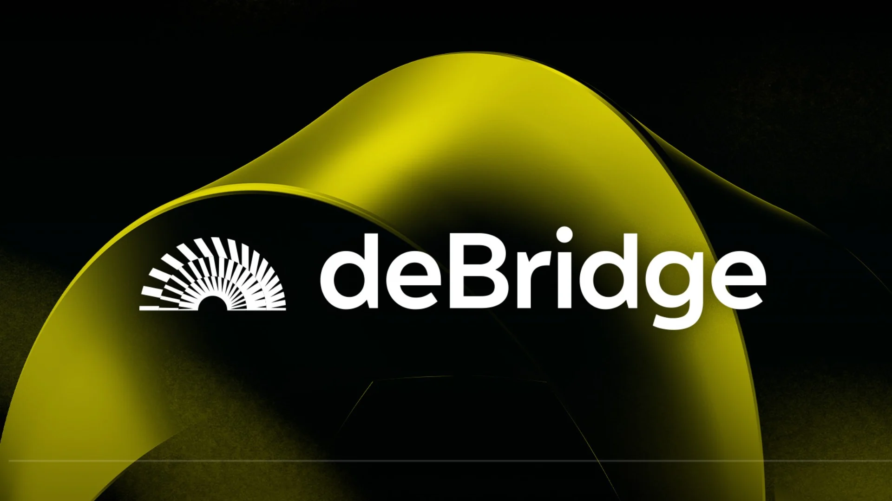

Free AI Website Maker
deBridge is a high-performance cross-chain interoperability layer designed to solve the "fragmentation problem" in decentralized finance. To understand deBridge, you have to look at the current state of blockchain technology: we live in a world of many different "islands" (like Ethereum, Solana, Arbitrum, and Base). Normally, these islands can’t talk to each other easily. deBridge acts as the high-speed ferry system and the fiber-optic cables that connect them, allowing value and data to move back and forth without friction.
The Problem with Traditional Bridges
To appreciate how deBridge works, you first have to understand why traditional bridges are often criticized. Most early bridges used a "lock-and-mint" mechanism. If you wanted to move 1 ETH from Ethereum to Solana, you would lock your real ETH in a vault on Ethereum, and the bridge would "mint" a "wrapped" version of ETH on Solana.
This created two massive problems:
Security Risk: Those vaults (bridges) became massive honeypots for hackers. If the vault was breached, the wrapped tokens on the other side became worthless.
Liquidity Fragmentation: You ended up with "wrapped" assets that weren't always easy to trade or use in other apps.
How deBridge is Different: The Intent-Based Model
deBridge moved away from the "lock-and-mint" trap and pioneered what is known as an intent-based architecture through its core product, the deBridge DLN (Destination Liquidity Network).
Instead of locking money in a vault, deBridge operates like a global P2P marketplace for liquidity. When you want to bridge funds, you aren't sending money into a black box; you are broadcasting an intent. You are saying, "I have USDC on Ethereum, and I want USDC on Solana."
Professional liquidity providers (called "fillers" or "solvers") see your request. They use their own existing funds on Solana to give you exactly what you want almost instantly. Once you receive your funds on the destination chain, the deBridge protocol settles the transaction and pays the filler back on the source chain.
Key Benefits of deBridge
Near-Instant Speed: Because you are waiting for a professional filler to send you funds rather than waiting for a slow blockchain "finality" process, transfers often take less than a minute.
Zero Slippage: In traditional bridges, the price might change while you wait. With deBridge’s DLN, the price is locked in at the moment you sign the transaction. What you see is exactly what you get.
Native Assets: You receive real, native tokens on the destination chain—not "wrapped" or "synthetic" versions that you have to swap again later.
High Security: Because there are no massive pools of locked collateral, there is no "honeypot" for hackers to target. The risk is decentralized.
The deBridge Ecosystem
Beyond just moving money, deBridge provides infrastructure for the entire crypto industry:
deBridge IaaS (Interoperability-as-a-Service): This allows new blockchains (like various Layer 2s) to have bridging capabilities built-in from day one.
Cross-Chain Messaging: Developers can use deBridge to send not just money, but instructions. For example, a DAO on Ethereum could vote to change a setting on an app located on the Polygon network.
The $DBR Token: The native governance token allows the community to participate in the protocol’s future and helps decentralize the validation process.
Why It Matters for the Average User
For a regular person, deBridge is the tool that makes "multi-chain" life feel like one single experience. You can buy an NFT on Solana using the funds you have sitting on Base in a single click. It removes the technical "homework" of crypto and makes the technology feel as seamless as sending an email.
Free AI Website Maker